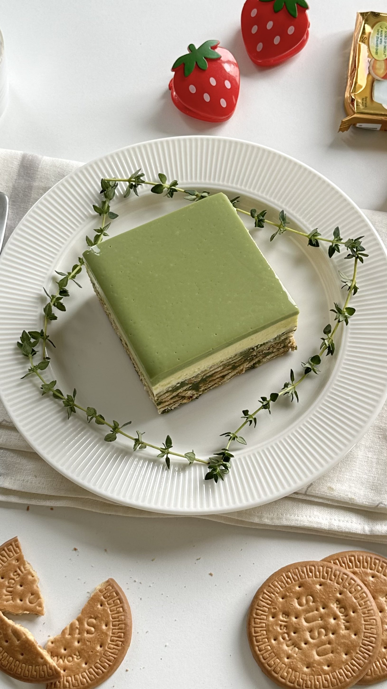

KEK BATIK MATCHA INDULGENCE

Melts in your mouth
Kek Batik Matcha Layer
- 340g Marie biscuits
- 120g (1/2 cup) salted butter (melted)
- 50g (1/3 cup) Horlicks
- 60g (1/2 cup) full cream milk powder
- <40g (2 tbsp) condensed milk
- 18 (3 tbsp + 1 tsp) matcha powder
- 180ml (3/4 cup) whole milk (warm)
- 1 egg
Cream Cheese Layer
- 200g cream cheese
- 40g (2 tbsp) condensed milk
- 300ml (1 1/4 cup) cold whipping cream
White chocolate matcha ganache
- 250g white chocolate
- 20ml (1/2 cup) whipping cream
- 30ml (2 tbsp) whole milk (warm)
- 6g (1 tbsp) matcha powder
Reminder!!
- I’m using 8”x8” removable bottom pan for this recipe.
- If you’re not a fan of Horlicks or they’re not available in your country, you can replace them with milk powder.